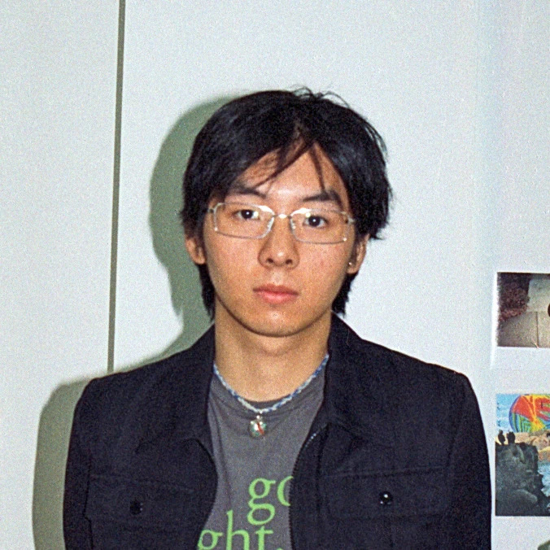

yuan_liu.info
──────────────────────────────────────────────
name Yuan Liu / 刘元
born 1999
origin Jiaxing, China
email lyzqzs@gmail.com
phone (+1) 661-373-8544
instagram @lyzqzs
──────────────────────────────────────────────
education
2025– California Institute of the Arts
Master of Fine Arts
2022 Denison University
Bachelor of Fine Arts
──────────────────────────────────────────────
solo exhibitions
2026 There Was a Box Man
CalArts Midres
L-shape Gallery
Valencia
2025 They Have No Names
Three Shadows Running Program
Three Shadows Photography Art Centre
Beijing
2022 山木 / Mountain Tree
BFA Thesis Show
Bryant Art Center
Granville
2020 In Columbus
Art Residency Display
Bryant Art Center
Granville
──────────────────────────────────────────────
selected group exhibitions
2026 APT 206
UCLA / CalArts Joint Exhibition
2117 W CLINTON St
Los Angeles
A Perfect Death
The Reef
Los Angeles
Skipping the Future
Dorado 806 Projects
Santa Monica
2025 Breakdown Playlist
Inside-Out Art Museum
Beijing
2023 This Is Not Here
新港西路82号交易园
Guangzhou
Wet Dreams
笋岗楼尚文化创意园
Shenzhen
非秩序：空间即展场
SHUNDOH SPACE
Shanghai
2022 Chasing Pigeons
Denison Museum
Granville
2020 REBIRTH: Welcome to the New Body
崽崽 ZEPETO
Shanghai
──────────────────────────────────────────────
awards
2023–24 Three Shadows Running Program
Finalist Award
Three Shadows Photography Art Centre
Beijing
2021–22 Through the Light of Malaga
Finalist Award
Picasso's Birthplace Art Sponsorship Foundation
Not Really Pictures
Nomination Award
4th 1839 Photography Award
Mary & Harold Osborne Scholar
Denison University
Mary K. Campbell &
Caroline W. Deckman Studio Arts Scholarship
Denison University
2020 Vail Award
Denison University
──────────────────────────────────────────────
artist residencies
2024 Artist in Residence Program
Aomori Contemporary Art Centre
Aomori
2020 Denison Studio Art Department
Summer On-site Project
Columbus
──────────────────────────────────────────────
available for
portraits
fashion
live music
editorial
...
